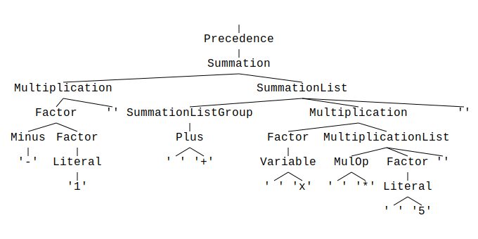

Operator Precedence
Operator precedence is implemented through grammar definitions. By placing higher-priority elements into sub-categories, you force the parser to branch into those first, resulting in earlier evaluation.
Consider the following example:
%start Precedence
%title "Operator precedence"
%comment "Shows the handling of operator precedence in `parol`"
%%
// ---------------------------------------------------------
// VARIABLE
Variable: /(?i)[A-Z][0-9A-Z]*/ ;
Literal : /[0-9]+/ ;
// ---------------------------------------------------------
// OPERATOR SYMBOLS
Plus : '+' ;
Minus : '-' ;
MulOp : "\*|/" ;
// ---------------------------------------------------------
// PARENTHESIS
LParen : '(' ;
RParen : ')' ;
// ---------------------------------------------------------
// EXPRESSIONS in order of increasing precedence
Precedence : Summation ;
Summation : Multiplication { (Plus | Minus) Multiplication } ;
Multiplication : Factor { MulOp Factor } ;
Factor : Literal
| Variable
| Minus Factor
| LParen Precedence RParen ;
Parsing the string -1 + x * 5 with the generated parser produces the following parse tree:

Notice that the innermost operator is evaluated first by the parser—here, the negation in the
Factor production.
Multiplication is the second-highest priority in this example, as it is a sub-category of
Summation.
To try this grammar, run:
parol new --bin --path .\precedence --tree
Replace the generated dummy grammar with the example above. Also, set test.txt to:
-1 + x * 5
Parse the text by running:
cargo run ./test.txt
from the root of the generated crate.
Because the --tree flag was used with parol new, parse trees are generated automatically. Look
for a test.svg file next to test.txt.
It is recommended to use parse tree generation during grammar development and remove it when deploying your parser in production.
However, the parse tree can be useful in certain scenarios. Because it's lossless, it also includes otherwise discarded tokens like spaces.
How do I implement the grammar processing?
You should take a look at the example calc.
Basically, grammar processing is implemented in calc_grammar.rs.
The struct CalcGrammar contains a collection of variables and their values called env.
It also contains a stack of values that holds the intermediate results during the calculation:
#![allow(unused)] fn main() { pub calc_results: Vec<DefinitionRange>, pub env: BTreeMap<String, DefinitionRange>, }
You can extend the struct PrecedenceGrammar in src\precedence_grammar.rs the same way.
Now you can implement selected semantic actions from the PrecedenceGrammarTrait. Look at the
generated src\precedence_grammar_trait.rs. It contains all available semantic actions which are
bound to non-terminals.
To implement, for instance, the variable action, copy the fn variable... block into
#![allow(unused)] fn main() { impl<'t> PrecedenceGrammarTrait<'t> for PrecedenceGrammar<'t> { } }
This way:
#![allow(unused)] fn main() { impl<'t> PrecedenceGrammarTrait<'t> for PrecedenceGrammar<'t> { /// Semantic action for non-terminal 'Variable' fn variable(&mut self, _arg: &Variable<'t>) -> Result<()> { Ok(()) } /// Semantic action for non-terminal 'Precedence' fn precedence(&mut self, arg: &Precedence<'t>) -> Result<()> { self.precedence = Some(arg.clone()); Ok(()) } } }
Now you can handle any variable. Because our grammar has no assignment yet, the function is simple.
It tries to retrieve the variable's value from env. If the variable is not found in env,
it creates a new entry with default value 0. Then it pushes this value on the calc_results vector
for later processing:
#![allow(unused)] fn main() { /// Semantic action for non-terminal 'Variable' fn variable(&mut self, var: &Variable<'t>) -> Result<()> { // Try to find the variable in the environment let value = if let Some(value) = self.env.get(var.variable.text()) { *value } else { // Insert default value for unassigned variable self.env .insert(var.variable.text().to_string(), DefinitionRange::default()); DefinitionRange::default() }; self.calc_results.push(value); Ok(()) } }
Don't forget to use the type Variable from the module precedence_grammar_trait.
To see the results, modify the Display implementation of PrecedenceGrammar to show the
intermediate
results and the environment.
#![allow(unused)] fn main() { impl Display for PrecedenceGrammar<'_> { fn fmt(&self, f: &mut Formatter<'_>) -> std::result::Result<(), Error> { writeln!( f, "Result stack\n{}", self.calc_results .iter() .rev() .map(|e| format!("{}", e)) .collect::<Vec<String>>() .join("\n") )?; writeln!( f, "\nEnv\n{}", self.env .iter() .map(|(i, v)| format!("{} = {}", i, v)) .collect::<Vec<String>>() .join("\n") ) } } }
cargo run ./test.txt
Parsing took 0 milliseconds.
Success!
Result stack
0
Env
x = 0
As expected, the variable x has been inserted into the environment with default value 0.
The value 0 is still on the stack.
Now the next step could be to implement the semantic action for non-terminal Literal:
#![allow(unused)] fn main() { /// Semantic action for non-terminal 'Literal' fn literal(&mut self, lit: &Literal<'t>) -> Result<()> { // Convert the integer literal to its value let lit = lit .literal .text() .parse::<DefinitionRange>() .map_err(|e| parol!(format!("Cannot convert literal to integer: {}", e)))?; // Push it onto the calculation stack self.calc_results.push(lit); Ok(()) } }
cargo run ./test.txt
Parsing took 0 milliseconds.
Success!
Result stack
5
0
1
Env
x = 0
Now you can continue on your own. Implement the unary and binary operations by taking one or two topmost numbers from the calculation stack and pushing the result onto the stack again. If everything is implemented correctly, the end result of the calculation should lie as a single value on top of the calculation stack.
-1 + x * 5 should result in -1 + 0 * 5 => -1.
Now you can add assignments to your grammar to store and access values in variables. Allow the grammar to contain multiple operations and remove assigned values from the calculation stack.